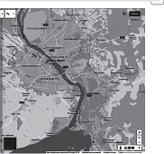

Страницы авторов "Тёмного леса"
Литературный Кисловодск и окрестности
Пишите нам! temnyjles@narod.ru
Цель данного исследования состояла в выявлении некоторых морфологических признаков "сибирского бальзамического тополя" и уточнение его систематического положения, а также в изучении гибридизации Populus nigra с "сибирским бальзамическим тополем" в Новосибирске в естественных и рудеральных местообитаниях. Идентификацию гибридов проводили по морфологическим признакам. Учитывались следующие признаки: степень выраженности желобка на черешках листьев; наличие или отсутствие опушения черешка; присутствие железок в основании листовых пластинок; окраска и форма листовой пластинки. На основе анализа морфологических признаков показано, что "сибирский бальзамический тополь" в Новосибирске представляет собой межсекционный гибрид черных и бальзамических тополей и соответствует описанию P. × sibirica G. Krylov et Grig. ex Skvortsov. Широкое использование этого культивара в зеленом строительстве и в защитном лесоразведении создало условия для тесного контакта с местным аборигенным пойменным видом - P. nigra. В настоящее время на территории Новосибирска происходит массовая гибридизация P. × sibirica и P. nigra в пойме Оби, на побережье Обского моря и на пустырях. По морфологическим признакам гибриды могут занимать промежуточное положение между родительскими таксонами. Такие гибриды имеют выраженный, но прерывающийся желобок, опушенные черешки, железки в основании листовой пластинки. У гибридов, уклоняющихся в сторону P. nigra, черешки немного уплощены, нередко опушены и имеют чуть заметный желобок. Кроме того, данные экземпляры имеют более округлое, а не дельтовидное или ромбовидное, как у P. nigra, очертание основания листовой пластинки. Инвазионная активность гибридов может привести к нарушению функционирования природных экосистем.
Ключевые слова: Populus, морфологические признаки тополей, естественная гибридизация, гибридизация тополей, инвазионная активность гибридов, Сибирь.
The goal of the present research is to point out some morphological features of "Siberian Balsamic Poplar" and specify its systemic position, and to study hybridization between Populus nigra and "Siberian Balsamic Poplar" in Novosibirsk in the natural and ruderal habitats. Identification of hybrids has been done by morphological features. The following features have been taken into account: the degree of severity of the groove on the petioles of leaves, presence or absence of petiolescence, the presence of glands in the base of leaf plates, color and form of the leaf plates. On the basis of analysis of morphological features the paper shows that "Siberian Balsamic Poplar" in Novosibirsk is an inter-sectional hybrid of black and balsamic poplars and corresponds to the description of P. × sibirica G. Krylov et Grig. ex Skvortsov. A wide use of this cultivar in the green construction and protective afforestation created conditions for neat contact with the local aboriginal type P. nigra. At the present time on the premises of Novosibirsk there is a mass hybridization of P.× sibirica and P. nigra in the Obfloodplain, on the shore of Ob sea and waste grounds. According to morphological features hybrids can occupy an intermediate position between the parent taxa. Such hybrids have a pronounced but interrupted groove, pubescent petioles, glands in the base of the leaf blade. In hybrids evading to P. nigra, the petioles are slightly flattened, often pubescent and have a slightly noticeable groove. In addition, these specimens have a more rounded, rather than deltoid or diamond-shaped, as in P. nigra, the outline of the base of the leaf blade. The invasive activity of hybrids can lead to disruption of the functioning of natural ecosystems
Key words: Populus, morphological characters of poplars, hybridization of poplars, invasion activity of hybrids, Siberia.
В природе в зоне пересечения ареалов довольно широко распространена естественная гибридизация тополей из секций Aigeiros и Tacamahaca. Такое явление можно наблюдать как в Южной Сибири [Поляков, 1950; Лиховид, 1984; Бакулин, 2004, 2007; Скворцов, 2006; Климов, Прошкин, 2016], так и в Северной Америке [Eckenwalder, 1984a, b; Isebrands, Richardson, 2014; Broeck et al., 2005].
Об интенсивности и характере прохождения естественной гибридизации в природе существуют разные мнения. Так, например, по данным В.Я. Полякова, в зоне контакта Populus nigra L. и P. laurifolia Ledeb. естественные гибриды не отличаются от родительских видов [Поляков, 1950]. Н.И. Лиховид (1984) отмечает, что в зоне совместного произрастания P. nigra и P. laurifolia гибридов с промежуточными признаками немного, но чистых, негибридного происхождения, особей, вероятно, нет [Лиховид, 1984]. По данным Б.В. Прошкина и А.В. Климова, гибриды встречаются единично и имеют промежуточные признаки. По морфометрическим признакам листа они уклоняются в сторону P. Laurifolia [Прошкин, Климов, 2016].
В тех регионах, где имеются аборигенные виды Populus, они нередко гибридизируют с культиварами, высаживаемыми в населенных пунктах, в полезащитных полосах, на промышленных плантациях. В результате интрогрессивной гибридизации возникает угроза исчезновения природных видов. Особенно остро такая проблема стоит с P. nigra в Западной Европе. Там этот вид гибридизирует с выращиваемыми на промышленных плантациях культиварами. В образовании одних из них принимали участие североамериканские виды P. trichocarpa Hock и P. deltoides Bartram ex Marshall. Другие культивары представляют собой многочисленные сорта Populus × canadensis Moench (P. nigra × P. deltoides) и P. nigra var. italica Moench. Интенсивность гибридизации зависит от численности популяций местного вида, а также от фрагментированности и степени антропогенной нарушенности местообитаний и может колебаться от 0,5% до 72% [Meirmans et al., 2010; Thompson et al., 2010; Roe et al., 2014).
В Сибирском регионе P. nigra распространен в Западной Сибири и юго-западной части Средней Сибири. В Новосибирске он растет в пойме р. Оби. P. nigra приурочен к долинам равнинных рек и встречается на влажных аллювиальных песчаных, песчано-галечниковых, супесчаных иловатых почвах. Особенно требовательна эта древесная порода к высокой влажности почвы в период прорастания семян и развития проростков. Среди тополей P. nigra наиболее вынослив к длительному затоплению. Засоленность почвы является одним из главных факторов, ограничивающих успешность роста и долговечность тополевых насаждений. P. nigra является пионерным видом и входит в состав пойменных фитоценозов [Бакулин, 2007].
Из культиваров в Южной Сибири широко распространен "сибирский бальзамический тополь". В.Т. Бакулин считает, что этот культивар близок к тополю бальзамическому (P. balsamifera L.) и представлен различными клонами неизвестного происхождения, завезенными в Сибирь из европейской части России. Некоторые клоны, как отмечает В.Т. Бакулин, возможно, имеют гибридное происхождение [Бакулин, 2010].
А.К. Скворцов описал тополь сибирский бальзамический как культивар гибридного происхождения - P. × sibirica G. Krylov et Grig. ex Skvortsov, полагая родительскими видами P. balsamifera и P. nigra. P.× sibirica повсеместно встречается не только в Сибири, но и по средней климатической полосе России вдоль улиц, бульваров, в полезащитных полосах и т.д. [Скворцов, 2007]. По данным Ю.А. Насимовича, в Московской области P. × sibirica часто вырастает на пустырях, близ железных дорог, на лесных опушках и в других нарушенных биотопах [Майоров и др., 2015], т.е. обладает определенной инвазионной активностью.
На происхождение "сибирского бальзамического тополя" существует и другая точка зрения. Ю.А. Насимович предположил, что в образовании этого гибрида вместо P. balsamifera принимали участие азиатские виды - P. laurifolia Ledeb и P. suaveolens Fischer [Майоров и др., 2012].
В настоящее время вопрос о родительских видах "сибирского бальзамического тополя" остается открытым и может быть разрешенным благо- . даря молекулярно-генетическим исследованиям.
Широкому распространению "сибирского бальзамического тополя" в Южной Сибири способствовало следующее обстоятельство. В степных районах Сибири неблагоприятными факторами для выращивания сельскохозяйственных культур являются засухи, суховеи и пыльные бури. Важная роль по предотвращению отрицательного влияния этих природных явлений отводилась созданию защитных лесных полос, которые стали высаживать в этом регионе еще с начала XX в. Но массово эти мероприятия проводились с 1966 по 1985 гг., когда было создано 40213 га защитных насаждений. В качестве одной из основных пород служил культивар неизвестного происхождения под названием "тополь бальзамический". Этот культивар занимает 42% всех лесозащитных насаждений [Бакулин, 1990]. Тополь "сибирский бальзамический" также широко использовался и в озеленении Новосибирска, где составляет 25% от всех деревьев и кустарников [Бакулин, 2005].
"Сибирский бальзамический тополь", размножаемый в культуре черенками, обладает высокой зимостойкостью, соле- и засухоустойчивостью, быстротой роста и легкостью размножения черенками. Благодаря этим биоэкологическим особенностям Populus × sibirica широко использовался в зеленом строительстве [Бакулин, 1990].
Следует отметить, что сложность идентификации видов и гибридов тополей связана с тем, что во многих гербариях отсутствуют сборы чистых видов североамериканских тополей из природы. Кроме того, отсутствуют типовые образцы и достаточно полные описания культиваров.
Цель данного исследования состояла в выявлении некоторых морфологических признаков "сибирского бальзамического тополя" и уточнение его систематического положения, а также в изучении гибридизации P. nigra с "сибирским бальзамическим тополем" в Новосибирске в естественных и рудеральных местообитаниях.
В Новосибирске на предмет гибридизации тополей были обследованы следующие территории: пойма р. Оби в районе метро "Речной вокзал", побережье Обского водохранилища около Академгородка, пустырь вблизи железнодорожной станции "Матвеевка" (рис. 1).
Пойма р. Оби, где проводились наблюдения, находится в центре города, на низком берегу реки и затопляется во время половодья. Несмотря на антропогенное воздействие, данная территория является естественной зоной обитания тополя черного.
Обское водохранилище было создано в 1957-1959 гг. Уровень воды в нем регулируется, и весеннее половодье отсутствует.
|  | Рис. 1. Карта-схема Новосибирска. Черными кружками обозначены территории, на которых изучалась гибридизация Populus × sibirica и P. nigra; белыми - городские посадки |
Железная дорога, на которой располагается станция Матвеевка, проходит вдоль Обского водохранилища.
Культивары тополей изучали на улицах Академгородка, на набережной Оби вблизи метро "Речной вокзал", в Ботаническом лесничестве и в центре города (см. рис. 1).
В работе были использованы гербарные материалы Главного ботанического сада им. Н.В. Цицина (MHA). Особый интерес представляют сборы А.К. Скворцова природных видов евроазиатских и североамериканских тополей и их гибридов.
Идентификацию гибридов проводили по морфологическим признакам. Прежде всего, учитывались следующие признаки: степень выраженности желобка на черешках листьев; наличие или отсутствие опушения черешка; присутствие железок в основании листовых пластинок; окраска и форма листовой пластинки.
Ряд исследователей рассматривают наличие или отсутствие желобка на верхней поверхности черешка как один из основных признаков, по которому различаются виды секций Tacamahaca и Aigeiros [Скворцов, 2005, 2010; Майоров и др., 2012].
Для видов секции Tacamahaca характерны укороченные побеги - брахибласты. У представителей секции Aigeiros нет истинных укороченных побегов, но наряду с ростовыми побегами образуются короткие вегетативные побеги длиной 4-10 см. Листья с наиболее длинными черешками формируются на брахибластах у видов секции Tacamahaca и на коротких побегах у представителей секции Aigeiros [Бакулин, 2004, 2005, 2007; Скворцов, 2005, 2010].
У всех представителей секции Aigeiros черешки листьев, как на удлиненных, так и на коротких побегах, сплюснуты с боков настолько сильно, что верхняя поверхность черешка становится очень тонкой. Такое лентовидное строение черешка делает невозможным образование желобка. У видов секции Tacamahaca желобок на цилиндрических черешках листьев всегда хорошо выражен и не прерывается на протяжении всей длины черешка. Однако у листьев с длинными черешками черешок в верхней части слегка сплющивается с боков. Желобок в этой части черешка становится более тонким по сравнению с листьями на коротких черешках.
По нашим данным, степень выраженности желобка у межсекционных гибридов довольно сильно варьирует. У многих гибридов желобок имеется, но в верхней части, где черешок несколько уплощается с боков, он обычно прерывается. Встречаются гибриды, у которых желобок на черешках хорошо выражен по всей длине, за исключением листьев с самыми длинными черешками. И наоборот, есть гибриды, у которых черешки сильно сплюснуты с боков и желобок отсутствует, но на коротких черешках желобок, хотя и очень тонкий, все же просматривается.
Таким образом, у межсекционных гибридов черных и бальзамических тополей степень выраженности желобка коррелирует с длиной черешка.
На изученных территориях в основном произрастает "сибирский бальзамический тополь". У данного культивара с верхней стороны черешка, который может быть голым или рыхло опушенным, имеется прерывающийся желобок. Этот признак указывает на то, что сибирский бальзамический тополь - межсекционный гибрид, который соответствует описанию Populus × sibirica. Кроме того, новосибирский культивар отличается от P. balsamifera формой листовой пластинки (особенно формой ее основания) и менее контрастной окраской верхней и нижней стороны листа.
В Новосибирске высажено несколько клонов P. × sibirica, различающихся по степени выраженности желобка на черешке, наличию или отсутствию железок в основании листовой пластинки, формой листовой пластинки, наличию или отсутствию ребристости или угловатости порослевых побегов, формой кроны (раскидистая, полупирамидальная).
Помимо P. × sibirica, который представлен мужскими и женскими экземплярами, в Новосибирске высажены тополя возрастом от 10 до 20 лет, соответствующие описанию некоторых сортов селекции В.Т. Бакулина. В их образовании принимали участие P. laurifolia, P. suaveolens Fisch., P. nigra, P. pyramidalis Rozier., P. × sibirica (под неправильным названием P. balsamifera). Такие посадки на исследованных территориях составляют не более 10% от всех тополей. Многие культивары имеют пирамидальную форму роста и представлены мужскими растениями. Но среди выращиваемых в Новосибирске тополей есть обильно плодоносящий межсекционный гибрид с трехстворчатыми коробочками на очень коротких плодоножках.
Мы не обнаружили в городских посадках P. × canadensis. Но на набережной около метро "Речной вокзал" произрастает культивар, который соответствует P. × petrowskiana (R.I. Schrod. ex Regel) Dippel [? P. deltoides var monolifera Henry. × P. moskoviensis (P. laurifolia × P. suaveolens)] в понимании Ю.А. Насимовича [Майоров и др., 2012].
Не были обнаружены P. simonii Carriere и P. longifolia Fiscer, используемые в озеленении Москвы.
В пойме Оби были обнаружены не только естественно произрастающие старые генеративные деревья P. nigra, но и посаженные там старые генеративные деревья P. × sibirica. Кроме того, в пойме (но не у самого уреза воды) встречается многочисленный подрост P. nigra и гибридов P. nigra с P. × sibirica весьма разнообразного облика. Гибридные растения составляют примерно 20% от всех тополей, произрастающих на данной территории. Большинство гибридов по внешнему виду мало отличимы от Populus nigra. Но у P. nigra в основании листовой пластинки нет железок. Побеги, листовые пластинки и черешки листьев у этого вида не имеют опушения, черешок без желобка [Комаров, 1936; Соколов и др., 1951; Бакулин, 2007; Скворцов, 2006]. У гибридных деревьев на некоторых листьях, расположенных на ростовых побегах, черешки немного уплощены, нередко опушены и имеют чуть заметный желобок. Кроме того, данные экземпляры имеют более округлое, а не дельтовидное или ромбовидное, как у P. nigra, очертание основания листовой пластинки. Помимо гибридов, внешне очень похожих на P. nigra, в пойме можно встретить экземпляры, занимающие промежуточное положение между P. nigra и P. × sibirica. Такие гибриды имеют выраженный, но прерывающийся желобок, опушенные черешки, железки в основании листовой пластинки.
На побережье Обского водохранилища гибриды составляют более 40% от всех тополей, там произрастающих. Наряду с 40-50-летними деревьями P. nigra на данной территории имеются выросшие из семян генеративные растения, близкие по облику к P. × sibirica. Есть подрост, внешне мало отличимый от P. nigra, но большинство гибридов занимают промежуточное положение между P. nigra и P. × sibirica.
На пустыре около железнодорожной станции Матвеевка мы не обнаружили P. nigra. Среди гибридов много экземпляров, уклоняющихся в сторону P. × sibirica.
Следует отметить, что на всех обследованных нами территориях, наряду с тополями, много разновозрастных особей Acer negundo L., успешно размножающихся семенным путем.
На территории Новосибирска происходят те же процессы, что и в Европе - массовая гибридизация P. nigra с культиварами тополей. В Сибири P. nigra скрещивается с P. × sibirica.
Часть гибридов P. nigra с P. × sibirica по форме листьев, степени выраженности желобка, опушению черешков и другим признакам занимает промежуточное положение между родительскими видами. Некоторые гибриды по морфологическим признакам сильно уклоняются в сторону P. nigra.
Решить вопрос о том, является ли гибридное потомство гибридами F1 или беккроссами, без проведения дополнительных молекулярно-генетических исследований невозможно.
Интенсивность гибридизации P. nigra зависит от специфики местообитания. Так, несмотря на антропогенные нарушения, в пойме Оби преобладает Populus nigra и гибриды, морфологически близкие к нему. Вне естественных условий, на пустыре произрастают гибриды P. nigra с P. × sibirica с широким диапазоном морфологических признаков. Промежуточная ситуация наблюдается на побережье искусственного водоема - Обского водохранилища.
Таким образом, гибриды, уклоняющиеся в сторону P. nigra, тяготеют к естественным местообитаниям P. nigra, а уклоняющиеся в сторону P. × sibirica - к рудеральным биотопам.
Последствия гибридизации можно рассматривать с точки зрения инвазионной активности тополей. С одной стороны, сельскохозяйственная деятельность человека, изменение гидрологического режима в пойменных областях приводят к разрушению среды обитания P. nigra. Его гибридизация с культиварами может привести к исчезновению данного вида. Поскольку P. nigra относится к пионерному ценофильному компоненту, то эти события могут вызвать нарушение функционирования или даже разрушение сукцессионных систем.
С другой стороны, все виды черных и бальзамических тополей приспособлены к существованию в поймах рек. Их гибриды занимают экологические ниши, не свойственные родительским видам. Они более засухоустойчивы и могут возобновляться семенами на рудеральных местообитаниях. Повышения инвазионной активности гибридов может привести к их внедрению в мезофитные лесные сообщества.
Массовое и неконтролируемое использование в озеленении и защитном лесоразведении P. × sibirica способствует его гибридизации с местным P. nigra. Вместе с кленом ясенелистным гибриды тополей активно распространяются не только по антропогенно нарушенным территориям, но и в пойме Оби, представляя угрозу аборигенным растительным сообществам.
Бакулин В.Т. Использование тополя в озеленении промышленных городов Сибири: краткий анализ проблемы // Сибирский экологический журнал. 2005. N5. С. 563-572. [Bakulin V.T. The use of poplar in the greening of industrial cities in Siberia: a brief analysis of the problem. Sibirskiy ekologicheskiy zhurnal. 2005. N5. Pp. 563-572.]
Бакулин В.Т. Тополь лавролистный. Новосибирск, 2004. [Bakulin V.T. Topol' lavrolistnyi [Populus laurifolia]. Novosibirsk, 2004.]
Бакулин В.Т. Тополь черный в Западной Сибири. Новосибирск, 2007. [Bakulin V.T. Topol' chernyi v Zapadnoi Sibiri [Poplar black in Western Siberia]. Novosibirsk, 2007.]
Климов А.В., Прошкин Б.В. Морфологическая идентификация естественных гибридов Populus nigra × P. laurifolia в пойме реки // Сибирский лесной журнал. 2016. N5. С. 55-63. [Klimov A.V., Proshkin B.V. Morphological identification of natural hybrids Populus nigra × P. laurifolia in the floodplain of the river. Sibirskii lesnoi zhurnal. 2016. N5. Pp. 55-63.]
Комаров В.Л. Род Тополь // Флора СССР. М.-Л., 1936. Т. 5. С. 215-242. [Komarov V.L. Genus Poplar. Flora SSSR. Moscow - Leningrad, 1936. T. 5. Pp. 215-242.]
Лиховид Н.И. Интродукция деревьев и кустарников в Хакасии. Красноярск, 1984. С. 19-20. [Likhovid N.I. Introduktsiya derev'ev i kustarnikov v Khakasii [Introduction of trees and shrubs in Khakassia]. Krasnoyarsk, 1984. Pp. 19-20.]
Адвентивная флора Москвы и Московской области / Майоров С.Р., Бочкин В.Д., Насимович Ю.А., Щербаков А.В. М., 2012. [Adventivnaya flora Moskvy i Moskovskoi oblasti [Adventive flora of Moscow and Moscow region] / Maiorov S.R., Bochkin V.D., Nasimovich Yu.A., Shcherbakov A.V. Moscow, 2012.]
Поляков В.Я. Тополи и тополевые леса Ангаро-Енисейского бассейна: Автореф. дис. ... д-ра биол. наук. М, 1950. [Polyakov V.Ya. Topoli i topolevye lesa Angaro-Eniseiskogo basseina [Poplars and poplar forests of the Angara-Yenisei basin]. PhD Thesis. Moscow, 1950.]
Скворцов А.К. О сибирском бальзамическом тополе // Бюллетень Главного ботанического сада. 2007. N193. С. 41-45. [Skvortsov A.K. About the Siberian Balsamic Poplar. Byulleten ' Glavnogo botanicheskogo sada. 2007. Vol. 193. Pp. 41-45.]
Скворцов А.К. Систематический конспект рода Populus в восточной Европе, Северной и Средней Азии // Бюллетень Главного ботанического сада. 2010. Вып. 196. С. 62-73. [Skvortsov A.K. A systematic outline of the genus Populus in Eastern Europe, North and Central Asia. Byulleten' Glavnogo botanicheskogo sada. 2010. Vol. 196. Pp. 62-73.]
Скворцов А.К., Белянина Н.Б. О бальзамических тополях (Populus section Tacamahaca, Salicaceae) на востоке азиатской России // Ботанический журнал. 2006. Т. 91. N1. С. 1244-1252. [Skvortsov A.K., Belyanina N.B. About balsamic poplars (Populus section Tacamahaca, Salicaceae) in the east of Asian Russia. Botanicheskiy zhurnal. 2006. Vol. 91. N1. Pp. 1244-1252.]
Соколов С.Я., Шипчинский Н.В., Ярмоленко А.В. Populus L. - Тополь // Деревья и кустарники СССР. М.-Л., 1951. Т. 2. С. 174-217. [Sokolov S.Ya., Shipchinskii N.V., Yarmolenko A.V. Populus L. - Poplar. Derev'ya i kustarniki SSSR. Moscow - Leningrad, 1951. T. 2. Pp. 174-217.]
Natural hybridization between cultivated poplars and their wild relatives: evidence and consequences for native poplar populations Ann. Broeck V., Villar M., Bockstaele E., Slycken J. For. Sci. 2005. Vol. 62. Pp. 601-613.
Eckenwalder J.E. Natural intersectional hybridization between North American species of Populus (Salicaceae) in sections Aigeiros and Tacamahaca. II. Taxonomy. Can. J. Bot. 1984a. Vol. 62. Pp. 325-335.
Eckenwalder J.E. Natural intersectional hybridization between North American species of Populus (Salicaceae) in sections Aigeiros and Tacamahaca. III. Paleobotany and evolution. Can. J. Bot. 1984b. Vol. 62. Pp. 336-342.
Isebrands J.G., Richardson J. Poplars and willows: trees for society and the en- vironment. Published jointly by CAB International and FAO Food and Agriculture <. Organization of the United Nations (FAO) Viale delle Terme di Caracalla, 00153 Rome, Italy. J.G. Isebrands, J. Richardson (eds). Rome, 2014. Pp. 30-39.
Complex patterns of hybridization between exotic and native North American poplar species. Meirmans P.G., Lamothe M., Gros-Louis M.C. et al. Am. J. Bot. 2010. Vol. 97. Pp. 1688-1697.
Fitness dynamics within a poplar hybrid zone: I. Prezygotic and postzygotic barriers impacting a native poplar hybrid stand. Roe A.D., MacQuarrie C.J., Gros- Louis M.C. et al. Ecol Evol. 2014. Vol. 4 (9). Pp. 1629-1647.
Repeated unidirectional introgression towards Populus balsamifera in contact zones of exotic and native poplars. Thompson S.L., Lamothe M., Meirmans P.G. et al. Mol. Ecol. 2010. Vol. 19. Pp. 132-145.
Статья поступила в редакцию 20.05.2016.
The article was received on 20.05.2016.
Костина Марина Викторовна - доктор биологических наук, доцент; профессор кафедры ботаники Института биологии и химии, Московский государственный педагогический университет
Kostina Marina V. - Doctor of Biological Sciences; Professor of De- partment of Botany of the Institute of Biology and Chemistry, Moscow State University of Education
E-mail: dekanat.vas@mail.ru
Чиндяева Людмила Николаевна - кандидат биологических наук; старший научный сотрудник, Центральный сибирский ботанический сад Сибирского отделения РАН, г. Новосибирск
Chindyaeva Ludmila N. - PhD in Biology; Senior Researcher, Central Siberian Botanical Garden, Siberian Branch of the Russian Academy of Sciences, Novosibirsk
E-mail: lnikch@yandex.ru
Васильева Наталия Владимировна - магистрант направления "Социобиология" Института биологии и химии, Московский государственный педагогический университет
Vasilieva Natalia V. - graduate student of the direction "Sociobiology" of Institute of Biology and Chemistry, Moscow State University of Education
E-mail: mkostina@list.ru
Главная страница сайта
Страницы Юрия Насимовича
Книги и статьи Юрия Насимовича по естественнонаучному краеведению
Статьи Юрия Насимовича о биологическом значении окраски цветка
Последнее изменение страницы 17 Jan 2023
{kind=link}